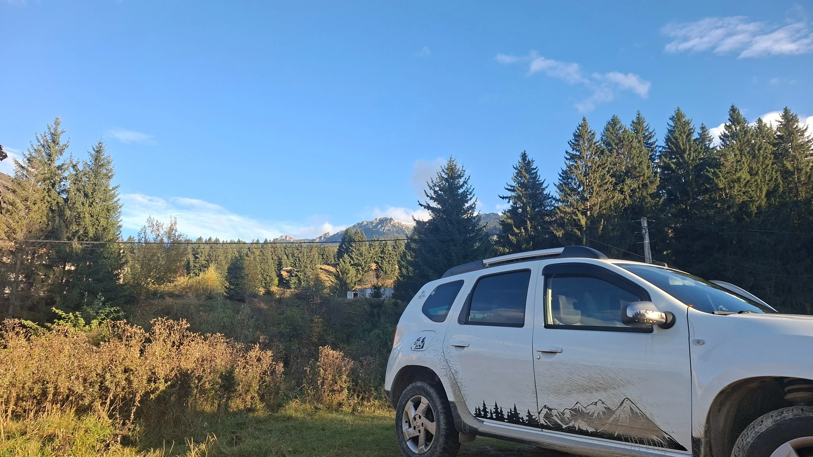

Scenic drives
Follow the mountain roads between Bran and Moieciu, stopping for village views and photographs.

Private guided tours with Corina, from your doorstep in Brașov to the mountain villages and back.
Plan my adventure Browse itinerariesI grew up hiking and camping with my family. These days, one of my favourite ways to spend a day is to take someone along a mountain road they’d never find on their own.
A little about me
Follow the mountain roads between Bran and Moieciu, stopping for village views and photographs.

Walk between wooden gates, hay meadows and the scattered houses of Măgura and Peștera.

Build a day around Bran Castle or ask about Peleș, Râșnov and the quieter stops along the way.

Leave time for a village lunch, local cheeses and a slice of homemade pie.

Choose an easy forest ride or a longer mountain route, depending on your pace.

Spend the last hour of daylight in the hills above Moieciu with a camera and a warm layer.

Walk with me through Zărnești Gorge. We choose the distance to suit your pace.
Follow mountain tracks with me and stop above the villages for photos.

I can pick you up at your accommodation, drive you between stops and bring you home at the end of the day. On suitable routes we can take the Duster along 4×4 roads to a viewpoint, leave the car for a hike or linger over lunch in a village. Tell me what you love and we’ll agree on the route, timing and what’s included.
Full dayWalk between the limestone walls in the morning, then drive up to Măgura for lunch. Walk as far as you like along the ridge towards Peștera before the ride home.
Plan this routeHalf dayTake the scenic roads into the hills. Stop for a short walk and a picnic, then watch the light change over the mountains before returning to your accommodation.
Plan this route Two days
Two daysDay one pairs a reserved Libearty visit with Moieciu and Bran Castle. On day two, walk through Zărnești Gorge and explore Peștera and Măgura. We confirm admission and lunch costs when planning.
Plan this routeHave a place saved on your map? Send it to me and let’s work it into your trip.
Plan my adventure“We had a fantastic two days exploring Romania with Corina from CoolCush Hub and couldn’t recommend her highly enough”